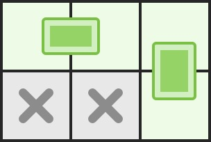
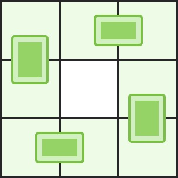

LCP 04. 覆盖
骨牌必占一白一黑：坏棋盘按 (r+c) 奇偶染成二分图，最多骨牌数 = 白格到黑格的最大匹配（匈牙利）。
思路
- 任何骨牌都盖住一个
(r+c)偶格和一个奇格 → 只在「白格—相邻黑格」间连边，答案就是最大匹配数。 - 匈牙利算法：白格依次找相邻黑格；黑格空着直接配，被占就递归请占它的白格挪窝，挪不动再试下一个邻居。
- 每轮增广前清空
asked，保证一个黑格一轮只被问一次，递归不绕圈。
图解
最优解
1import java.util.ArrayList;2import java.util.Arrays;3import java.util.List;4 5class Solution {6 private int m;7 private List<List<Integer>> adj = new ArrayList<>(); // 白格 → 相邻黑格8 private int[] matchOf; // 黑格 → 配对的白格，-1 未配9 private boolean[] asked; // 本轮增广中黑格是否被问过10 11 public int domino(int n, int m, int[][] broken) {12 this.m = m;13 boolean[] bad = new boolean[n * m];14 for (int[] p : broken) bad[p[0] * m + p[1]] = true;15 adj.clear();16 for (int i = 0; i < n * m; i++) adj.add(new ArrayList<>());17 int[] dr = {0, 0, -1, 1}, dc = {-1, 1, 0, 0}; // 邻居顺序：左、右、上、下18 // 骨牌必占一白一黑（(r+c) 奇偶）：只从白格向相邻黑格连边19 for (int r = 0; r < n; r++) {20 for (int c = 0; c < m; c++) {21 int id = r * m + c;22 if (bad[id] || (r + c) % 2 != 0) continue;23 for (int d = 0; d < 4; d++) {24 int nr = r + dr[d], nc = c + dc[d];25 if (nr < 0 || nr >= n || nc < 0 || nc >= m) continue;26 if (!bad[nr * m + nc]) adj.get(id).add(nr * m + nc);27 }28 }29 }30 matchOf = new int[n * m];31 Arrays.fill(matchOf, -1);32 asked = new boolean[n * m];33 int ans = 0;34 // 白格依次找对象；看中的黑格被占，就请占它的白格挪窝35 for (int id = 0; id < n * m; id++) {36 if (bad[id] || (id / m + id % m) % 2 != 0) continue;37 Arrays.fill(asked, false);38 if (augment(id)) ans++;39 }40 return ans;41 }42 43 private boolean augment(int u) {44 for (int v : adj.get(u)) {45 if (asked[v]) continue;46 asked[v] = true;47 if (matchOf[v] == -1 || augment(matchOf[v])) {48 matchOf[v] = u;49 return true;50 }51 }52 return false;53 }54}题目
你有一块棋盘，棋盘上有一些格子已经坏掉了。你还有无穷块大小为1 * 2的多米诺骨牌，你想把这些骨牌不重叠地覆盖在完好的格子上，请找出你最多能在棋盘上放多少块骨牌？这些骨牌可以横着或者竖着放。
输入：n, m代表棋盘的大小；broken是一个b * 2的二维数组，其中每个元素代表棋盘上每一个坏掉的格子的位置。
输出：一个整数，代表最多能在棋盘上放的骨牌数。
示例 1：
输入：n = 2, m = 3, broken = [[1, 0], [1, 1]] 输出：2 解释：我们最多可以放两块骨牌：[[0, 0], [0, 1]]以及[[0, 2], [1, 2]]。（见下图）

示例 2：
输入：n = 3, m = 3, broken = [] 输出：4 解释：下图是其中一种可行的摆放方式

限制：
1 <= n <= 81 <= m <= 80 <= b <= n * m
题面取自力扣当前版本。
数据快照 2026-11-04。题面版权归力扣所有，本站点仅供本人学习使用，请勿对外发布。